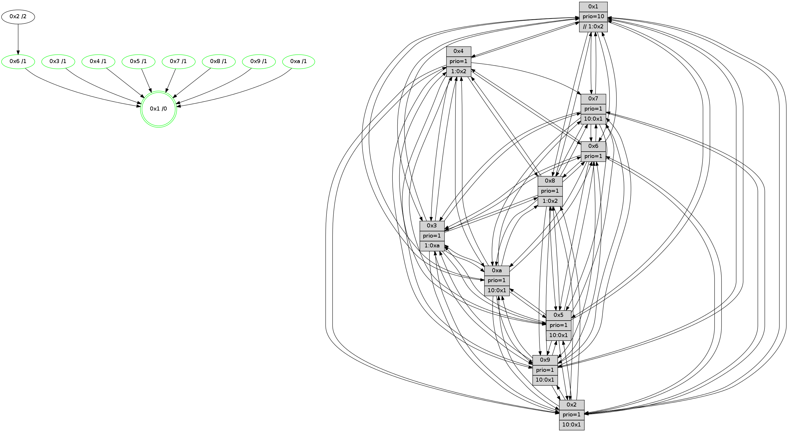

>> << IDX [start] -100 -25 -5 +0 +5 +25 +100 [1070.0023191]
 Previous packets
----------------------------------------------------------------------
1065.193547 beacon01(faad) #0 coord=01,02,03,04,05,06,07,0a,09,08 cycle=688.0ms assoc
-- color-indic=1 64 a5 67
1065.203529 beacon02(faad) #0 coord=01,02,03,04,05,06,07,0a,09,08 cycle=688.0ms assoc 64 36 56
1065.213529 beacon03(faad) #0 coord=01,02,03,04,05,06,07,0a,09,08 cycle=688.0ms assoc 64 4c 1b
1065.223530 beacon04(faad) #0 coord=01,02,03,04,05,06,07,0a,09,08 cycle=688.0ms assoc 64 3b f1
1065.233530 beacon05(faad) #0 coord=01,02,03,04,05,06,07,0a,09,08 cycle=688.0ms assoc 64 41 bc
1065.243530 beacon06(faad) #0 coord=01,02,03,04,05,06,07,0a,09,08 cycle=688.0ms assoc 64 cf 6b
1065.253531 beacon07(faad) #0 coord=01,02,03,04,05,06,07,0a,09,08 cycle=688.0ms assoc 64 b5 26
1065.263534 beacon0a(faad) #0 coord=01,02,03,04,05,06,07,0a,09,08 cycle=688.0ms assoc 64 c4 2d
1065.273533 beacon09(faad) #0 coord=01,02,03,04,05,06,07,0a,09,08 cycle=688.0ms assoc 64 4a fa
1065.283534 beacon08(faad) #0 coord=01,02,03,04,05,06,07,0a,09,08 cycle=688.0ms assoc 64 30 b7
1065.294773 [Hello(10): seq=613 sym=6,2,3,8,7,5,9,4,1 sysInfo=hasWarning stat=6:9,12,10,4/2:12,15,1,8/3:1,7,1,10/8:11,0,5,0/7:11,1,10,4/5:2,12,10,14/9:12,8,12,1/4:5,8,13,8/1:13,2,5,1]
1065.298231 [STC(1) #0.155 tree-change,inconsistent-stability,stable,to-color d=0]
1065.299615 [Color(5) seq=287 @0:0 prio=1 >10.@1,1.@2,1.@3,1.@4]
1065.302738 [Color(2) seq=285 @0:0 prio=1 >10.@1,1.@3,1.@5,1.@6]
1065.310357 [Color(1) seq=361 @0:0 prio=10 >>1.@2,1.@3,1.@4]
1065.313004 [Hello(7): seq=680 sym=2,3,5,6,4,8,9,10,1 sysInfo=hasWarning stat=2:1,9,14,15/3:8,8,11,14/5:10,6,13,1/6:14,9,11,7/4:0,2,0,0/8:13,13,8,1/9:1,2,1,0/10:11,1,14,4/1:6,3,15,0]
1065.316497 [Hello(4): seq=680 sym=5,7,6,2,3,9,8,10,1 sysInfo= stat=5:8,14,7,14/7:11,5,6,9/6:8,4,5,10/2:11,1,1,12/3:11,1,4,10/9:5,12,12,9/8:2,8,11,4/10:10,13,13,12/1:15,11,14,1]
1065.319473 [Hello(9): seq=624 sym=2,5,3,4,7,6,8,10,1 sysInfo=hasWarning stat=2:0,1,4,5/5:6,14,3,5/3:1,3,6,14/4:1,2,1,0/7:0,4,4,10/6:15,0,14,9/8:9,15,8,3/10:15,8,8,3/1:4,9,14,1]
1065.322673 [Color(4) seq=260 @0:0 prio=1 >1.@2,1.@3,1.@5,1.@6]
1065.326900 [Color(9) seq=286 @0:0 prio=1 >10.@1,1.@2,1.@3,1.@5]
1065.333945 [Color(7) seq=239 @0:0 prio=1 >10.@1,1.@2,1.@3,1.@5]
----------------------------------------------------------------------
1065.981678 beacon01(faad) #0 coord=01,02,03,04,05,06,07,0a,09,08 cycle=688.0ms assoc
-- color-indic=1 64 61 69
1065.991661 beacon02(faad) #0 coord=01,02,03,04,05,06,07,0a,09,08 cycle=688.0ms assoc 64 f2 58
1066.001660 beacon03(faad) #0 coord=01,02,03,04,05,06,07,0a,09,08 cycle=688.0ms assoc 64 88 15
1066.011660 beacon04(faad) #0 coord=01,02,03,04,05,06,07,0a,09,08 cycle=688.0ms assoc 64 ff ff
1066.021661 beacon05(faad) #0 coord=01,02,03,04,05,06,07,0a,09,08 cycle=688.0ms assoc 64 85 b2
1066.031661 beacon06(faad) #0 coord=01,02,03,04,05,06,07,0a,09,08 cycle=688.0ms assoc 64 0b 65
1066.041661 beacon07(faad) #0 coord=01,02,03,04,05,06,07,0a,09,08 cycle=688.0ms assoc 64 71 28
1066.051666 beacon0a(faad) #0 coord=01,02,03,04,05,06,07,0a,09,08 cycle=688.0ms assoc 64 00 23
1066.061665 beacon09(faad) #0 coord=01,02,03,04,05,06,07,0a,09,08 cycle=688.0ms assoc 64 8e f4
1066.071666 beacon08(faad) #0 coord=01,02,03,04,05,06,07,0a,09,08 cycle=688.0ms assoc 64 f4 b9
1066.082882 [Hello(5): seq=681 sym=7,6,4,3,1,9,8,10,2 sysInfo=hasWarning stat=7:11,5,13,11/6:10,11,14,0/4:12,5,7,10/3:10,9,2,12/1:12,13,0,1/9:9,8,8,7/8:0,4,4,0/10:5,0,1,7/2:14,9,8,3]
1066.087085 [STC(10)->1 #0.155 tree-change,inconsistent-stability,stable,to-color d=1]
1066.088358 [Hello(3): seq=681 sym=1,7,6,2,4,8,9,10,5 sysInfo=hasWarning stat=1:12,6,9,0/7:15,5,1,9/6:13,1,0,3/2:13,13,4,14/4:2,12,7,9/8:13,12,0,2/9:12,10,6,12/10:14,2,3,3/5:2,14,12,14]
1066.091165 [STC(3)->1 #0.155 tree-change,inconsistent-stability,stable,to-color d=1]
1066.092803 [Hello(1): seq=590 sym=4,2,9,5,10,3,8,6,7 sysInfo=coloring-mode-on,ColoringModeRequestCalled stat=4:6,7,8,2/2:6,1,8,14/9:0,13,7,6/5:10,13,0,7/10:14,9,9,5/3:5,12,13,5/8:12,12,8,1/6:0,10,8,11/7:1,0,7,12]
1066.095366 [STC(8)->1 #0.155 tree-change,inconsistent-stability,stable,to-color d=1]
1066.097535 [Hello(2): seq=677 sym=4,5,7,6,3,9,8,10,1 sysInfo=hasWarning stat=4:0,0,11,8/5:5,1,1,0/7:1,3,9,11/6:6,0,2,9/3:3,0,1,7/9:11,15,3,5/8:6,11,14,9/10:14,2,4,10/1:0,1,0,0]
1066.101262 [Color(10) seq=270 @0:0 prio=1 >10.@1,1.@2,1.@3,1.@5]
1066.105878 [Color(3) seq=310 @0:0 prio=1 >1.@a]
1066.107272 [Hello(6): seq=681 sym=2,3,5,4,7,9,8,10,1 sysInfo= stat=2:2,11,9,4/3:13,11,8,10/5:15,12,7,0/4:2,5,1,3/7:9,3,9,9/9:4,3,9,6/8:0,6,4,3/10:4,0,13,12/1:12,13,14,1]
1066.112350 [STC(6)->1 #0.155 tree-change,inconsistent-stability,stable,to-color d=1]
1066.114616 [Color(6) seq=313 @0:0 prio=1]
----------------------------------------------------------------------
1066.769808 beacon01(faad) #0 coord=01,02,03,04,05,06,07,0a,09,08 cycle=688.0ms assoc
-- color-indic=1 64 dd 6c
1066.779791 beacon02(faad) #0 coord=01,02,03,04,05,06,07,0a,09,08 cycle=688.0ms assoc 64 4e 5d
1066.789792 beacon03(faad) #0 coord=01,02,03,04,05,06,07,0a,09,08 cycle=688.0ms assoc 64 34 10
1066.799791 beacon04(faad) #0 coord=01,02,03,04,05,06,07,0a,09,08 cycle=688.0ms assoc 64 43 fa
1066.809791 beacon05(faad) #0 coord=01,02,03,04,05,06,07,0a,09,08 cycle=688.0ms assoc 64 39 b7
1066.819792 beacon06(faad) #0 coord=01,02,03,04,05,06,07,0a,09,08 cycle=688.0ms assoc 64 b7 60
1066.829792 beacon07(faad) #0 coord=01,02,03,04,05,06,07,0a,09,08 cycle=688.0ms assoc 64 cd 2d
1066.839796 beacon0a(faad) #0 coord=01,02,03,04,05,06,07,0a,09,08 cycle=688.0ms assoc 64 bc 26
1066.849798 beacon09(faad) #0 coord=01,02,03,04,05,06,07,0a,09,08 cycle=688.0ms assoc 64 32 f1
1066.859798 beacon08(faad) #0 coord=01,02,03,04,05,06,07,0a,09,08 cycle=688.0ms assoc 64 48 bc
1066.870996 [Hello(8): seq=625 sym=5,2,3,4,9,6,7,10,1 sysInfo=hasWarning stat=5:8,3,11,0/2:4,5,6,7/3:1,4,10,14/4:13,6,2,9/9:12,13,11,2/6:10,13,10,11/7:12,2,9,2/10:1,15,13,3/1:10,7,13,0]
1066.873921 [Color(5) seq=288 @0:0 prio=1 >10.@1,1.@2,1.@3,1.@4]
1066.875913 [Color(1) seq=362 @0:0 prio=10 >>1.@2,1.@3,1.@4]
1066.877515 [Hello(9): seq=625 sym=2,5,3,4,7,6,8,10,1 sysInfo=hasWarning stat=2:1,1,4,5/5:7,14,3,5/3:2,4,7,14/4:1,2,1,0/7:0,5,4,10/6:0,1,15,9/8:10,0,9,3/10:15,8,9,3/1:5,9,14,1]
1066.880103 [STC(2)->6-.->1 #0.155 to-color d=2]
1066.881919 [Color(9) seq=287 @0:0 prio=1 >10.@1,1.@2,1.@3,1.@5]
1066.883548 [Hello(4): seq=681 sym=5,7,6,2,3,9,8,10,1 sysInfo= stat=5:9,14,7,14/7:11,6,6,9/6:9,5,6,10/2:12,1,1,12/3:12,2,5,10/9:5,13,12,9/8:2,8,12,4/10:11,14,14,12/1:0,11,14,1]
1066.886932 [Hello(7): seq=681 sym=2,3,5,6,8,9,10,1 sysInfo=hasWarning stat=2:2,9,14,15/3:9,9,12,14/5:11,6,13,1/6:15,10,12,7/8:13,13,9,1/9:1,2,1,0/10:12,2,15,4/1:7,3,15,0]
1066.890276 [Color(7) seq=240 @0:0 prio=1 >10.@1,1.@2,1.@3,1.@5]
1066.893829 [Hello(10): seq=614 sym=6,2,3,8,7,5,9,4,1 sysInfo=hasWarning stat=6:10,13,11,4/2:12,0,1,8/3:2,8,1,10/8:11,0,5,0/7:12,2,10,4/5:3,13,10,14/9:13,9,12,1/4:6,9,13,8/1:13,3,6,1]
1066.899127 [Color(4) seq=261 @0:0 prio=1 >1.@2,1.@3,1.@5,1.@6]
----------------------------------------------------------------------
1067.557939 beacon01(faad) #0 coord=01,02,03,04,05,06,07,0a,09,08 cycle=688.0ms assoc
-- color-indic=1 64 e9 74
1067.567920 beacon02(faad) #0 coord=01,02,03,04,05,06,07,0a,09,08 cycle=688.0ms assoc 64 7a 45
1067.577922 beacon03(faad) #0 coord=01,02,03,04,05,06,07,0a,09,08 cycle=688.0ms assoc 64 00 08
1067.587923 beacon04(faad) #0 coord=01,02,03,04,05,06,07,0a,09,08 cycle=688.0ms assoc 64 77 e2
1067.597924 beacon05(faad) #0 coord=01,02,03,04,05,06,07,0a,09,08 cycle=688.0ms assoc 64 0d af
1067.607922 beacon06(faad) #0 coord=01,02,03,04,05,06,07,0a,09,08 cycle=688.0ms assoc 64 83 78
1067.617922 beacon07(faad) #0 coord=01,02,03,04,05,06,07,0a,09,08 cycle=688.0ms assoc 64 f9 35
1067.627927 beacon0a(faad) #0 coord=01,02,03,04,05,06,07,0a,09,08 cycle=688.0ms assoc 64 88 3e
1067.637928 beacon09(faad) #0 coord=01,02,03,04,05,06,07,0a,09,08 cycle=688.0ms assoc 64 06 e9
1067.647927 beacon08(faad) #0 coord=01,02,03,04,05,06,07,0a,09,08 cycle=688.0ms assoc 64 7c a4
1067.659497 [Hello(1): seq=591 sym=4,2,9,5,10,3,8,6,7 sysInfo=coloring-mode-on,ColoringModeRequestCalled stat=4:7,8,8,2/2:7,1,9,14/9:1,14,7,6/5:10,13,0,7/10:15,10,9,5/3:5,13,13,5/8:13,12,9,1/6:1,11,9,11/7:2,1,7,12]
1067.663522 [Hello(2): seq=678 sym=4,5,7,6,3,9,8,10,1 sysInfo=hasWarning stat=4:1,1,11,8/5:5,1,1,0/7:2,4,9,11/6:7,1,3,9/3:3,1,1,7/9:11,0,3,5/8:6,11,14,9/10:15,3,4,10/1:0,1,0,0]
1067.667057 [Color(10) seq=271 @0:0 prio=1 >10.@1,1.@2,1.@3,1.@5]
1067.671536 [Hello(6): seq=682 sym=2,3,5,4,7,9,8,10,1 sysInfo= stat=2:2,11,10,4/3:13,11,8,10/5:0,13,7,0/4:3,6,1,3/7:10,4,9,9/9:5,4,9,6/8:1,6,4,3/10:5,0,13,12/1:12,14,14,1]
1067.674549 [Hello(3): seq=682 sym=1,7,6,2,4,8,9,10,5 sysInfo=hasWarning stat=1:12,7,9,0/7:0,6,1,9/6:14,2,1,3/2:13,13,5,14/4:3,13,7,9/8:14,12,0,2/9:13,11,6,12/10:15,2,3,3/5:3,15,12,14]
1067.678330 [Color(3) seq=311 @0:0 prio=1 >1.@a]
1067.679706 [Hello(5): seq=682 sym=7,6,4,3,1,9,8,10,2 sysInfo=hasWarning stat=7:12,6,13,11/6:11,12,15,0/4:13,6,7,10/3:11,10,3,12/1:13,14,0,1/9:10,9,8,7/8:1,4,5,0/10:6,0,2,7/2:15,9,9,3]
1067.683249 [TreeStatus(6)-.->1 #0.155 tree-change,inconsistent-stability,stable child=1]
1067.686994 [Color(6) seq=314 @0:0 prio=1]
----------------------------------------------------------------------
1068.346069 beacon01(faad) #0 coord=01,02,03,04,05,06,07,0a,09,08 cycle=688.0ms assoc
-- color-indic=1 64 55 71
1068.356051 beacon02(faad) #0 coord=01,02,03,04,05,06,07,0a,09,08 cycle=688.0ms assoc 64 c6 40
1068.366052 beacon03(faad) #0 coord=01,02,03,04,05,06,07,0a,09,08 cycle=688.0ms assoc 64 bc 0d
1068.376052 beacon04(faad) #0 coord=01,02,03,04,05,06,07,0a,09,08 cycle=688.0ms assoc 64 cb e7
1068.386051 beacon05(faad) #0 coord=01,02,03,04,05,06,07,0a,09,08 cycle=688.0ms assoc 64 b1 aa
1068.396052 beacon06(faad) #0 coord=01,02,03,04,05,06,07,0a,09,08 cycle=688.0ms assoc 64 3f 7d
1068.406053 beacon07(faad) #0 coord=01,02,03,04,05,06,07,0a,09,08 cycle=688.0ms assoc 64 45 30
1068.416057 beacon0a(faad) #0 coord=01,02,03,04,05,06,07,0a,09,08 cycle=688.0ms assoc 64 34 3b
1068.426057 beacon09(faad) #0 coord=01,02,03,04,05,06,07,0a,09,08 cycle=688.0ms assoc 64 ba ec
1068.436057 beacon08(faad) #0 coord=01,02,03,04,05,06,07,0a,09,08 cycle=688.0ms assoc 64 c0 a1
1068.447285 [Hello(10): seq=615 sym=6,2,3,8,7,5,9,4,1 sysInfo=hasWarning stat=6:11,14,11,5/2:12,0,1,8/3:3,9,1,10/8:11,0,5,0/7:12,2,10,4/5:4,13,10,14/9:13,9,12,1/4:6,10,13,8/1:14,3,6,1]
1068.450501 [Color(5) seq=289 @0:0 prio=1 >10.@1,1.@2,1.@3,1.@4]
1068.453086 [Hello(7): seq=682 sym=2,3,5,6,8,9,10,1 sysInfo=hasWarning stat=2:3,9,14,15/3:10,10,12,14/5:12,7,13,1/6:0,11,12,8/8:14,13,9,1/9:1,2,1,0/10:13,3,15,4/1:8,3,15,0]
1068.455838 [Color(9) seq=288 @0:0 prio=1 >10.@1,1.@2,1.@3,1.@5]
1068.459734 [Color(7) seq=241 @0:0 prio=1 >10.@1,1.@2,1.@3,1.@5]
1068.462238 [Hello(8): seq=626 sym=5,2,3,4,9,6,7,10,1 sysInfo=hasWarning stat=5:9,4,11,0/2:4,5,7,7/3:2,5,10,14/4:14,7,2,9/9:13,14,11,2/6:11,14,10,12/7:13,3,9,2/10:2,15,13,3/1:11,8,13,0]
1068.464801 [Hello(4): seq=682 sym=5,7,6,2,3,9,8,10,1 sysInfo= stat=5:10,15,7,14/7:11,6,6,9/6:10,6,6,11/2:13,1,1,12/3:13,3,5,10/9:5,13,12,9/8:3,8,12,4/10:11,15,14,12/1:1,11,14,1]
1068.469525 [Color(4) seq=262 @0:0 prio=1 >1.@2,1.@3,1.@5,1.@6]
----------------------------------------------------------------------
1069.134199 beacon01(faad) #0 coord=01,02,03,04,05,06,07,0a,09,08 cycle=688.0ms assoc
-- color-indic=1 64 91 7f
1069.144181 beacon02(faad) #0 coord=01,02,03,04,05,06,07,0a,09,08 cycle=688.0ms assoc 64 02 4e
1069.154181 beacon03(faad) #0 coord=01,02,03,04,05,06,07,0a,09,08 cycle=688.0ms assoc 64 78 03
1069.164182 beacon04(faad) #0 coord=01,02,03,04,05,06,07,0a,09,08 cycle=688.0ms assoc 64 0f e9
1069.174181 beacon05(faad) #0 coord=01,02,03,04,05,06,07,0a,09,08 cycle=688.0ms assoc 64 75 a4
1069.184180 beacon06(faad) #0 coord=01,02,03,04,05,06,07,0a,09,08 cycle=688.0ms assoc 64 fb 73
1069.194182 beacon07(faad) #0 coord=01,02,03,04,05,06,07,0a,09,08 cycle=688.0ms assoc 64 81 3e
1069.204186 beacon0a(faad) #0 coord=01,02,03,04,05,06,07,0a,09,08 cycle=688.0ms assoc 64 f0 35
1069.214186 beacon09(faad) #0 coord=01,02,03,04,05,06,07,0a,09,08 cycle=688.0ms assoc 64 7e e2
1069.224188 beacon08(faad) #0 coord=01,02,03,04,05,06,07,0a,09,08 cycle=688.0ms assoc 64 04 af
1069.236682 [Hello(5): seq=683 sym=7,6,4,3,1,9,8,10,2 sysInfo=hasWarning stat=7:12,7,13,11/6:11,13,15,1/4:14,7,7,10/3:11,10,3,12/1:13,14,0,1/9:11,10,8,7/8:2,4,5,0/10:7,0,2,7/2:15,9,9,3]
1069.240037 [Hello(6): seq=683 sym=2,3,5,4,7,9,8,10,1 sysInfo= stat=2:2,11,10,4/3:13,11,8,10/5:0,14,7,0/4:4,7,1,3/7:11,5,9,9/9:5,5,9,6/8:2,6,4,3/10:6,0,13,12/1:13,14,14,1]
1069.243052 [Color(8) seq=305 @0:0 prio=1 >1.@2,1.@3,1.@5,1.@a]
1069.245749 [Color(10) seq=272 @0:0 prio=1 >10.@1,1.@2,1.@3,1.@5]
1069.247794 [Hello(2): seq=679 sym=4,5,7,6,3,9,8,10,1 sysInfo=hasWarning stat=4:2,2,11,8/5:6,1,1,0/7:3,5,9,11/6:8,2,3,10/3:4,2,1,7/9:11,1,3,5/8:7,11,14,9/10:0,4,4,10/1:0,2,0,0]
1069.250733 [Hello(1): seq=592 sym=4,2,9,5,10,3,8,6,7 sysInfo=coloring-mode-on,ColoringModeRequestCalled stat=4:8,9,8,2/2:8,1,9,14/9:1,15,7,6/5:11,13,0,7/10:0,11,9,5/3:6,14,13,5/8:14,12,9,1/6:2,12,9,12/7:3,2,7,12]
1069.254178 [STC(1) #0.156 tree-change,inconsistent-stability,stable,to-color d=0]
1069.256326 [Hello(3): seq=683 sym=1,7,6,2,4,8,9,10,5 sysInfo=hasWarning stat=1:13,8,9,0/7:1,7,1,9/6:14,3,1,4/2:13,13,5,14/4:4,14,7,9/8:15,12,0,2/9:13,12,6,12/10:0,2,3,3/5:4,15,12,14]
1069.260116 [Color(3) seq=312 @0:0 prio=1 >1.@a]
1069.261955 [Color(6) seq=315 @0:0 prio=1]
----------------------------------------------------------------------
1069.922329 beacon01(faad) #0 coord=01,02,03,04,05,06,07,0a,09,08 cycle=688.0ms assoc
-- color-indic=1 64 2d 7a
1069.932312 beacon02(faad) #0 coord=01,02,03,04,05,06,07,0a,09,08 cycle=688.0ms assoc 64 be 4b
1069.942311 beacon03(faad) #0 coord=01,02,03,04,05,06,07,0a,09,08 cycle=688.0ms assoc 64 c4 06
1069.952312 beacon04(faad) #0 coord=01,02,03,04,05,06,07,0a,09,08 cycle=688.0ms assoc 64 b3 ec
1069.962313 beacon05(faad) #0 coord=01,02,03,04,05,06,07,0a,09,08 cycle=688.0ms assoc 64 c9 a1
1069.972313 beacon06(faad) #0 coord=01,02,03,04,05,06,07,0a,09,08 cycle=688.0ms assoc 64 47 76
1069.982313 beacon07(faad) #0 coord=01,02,03,04,05,06,07,0a,09,08 cycle=688.0ms assoc 64 3d 3b
1069.992317 beacon0a(faad) #0 coord=01,02,03,04,05,06,07,0a,09,08 cycle=688.0ms assoc 64 4c 30